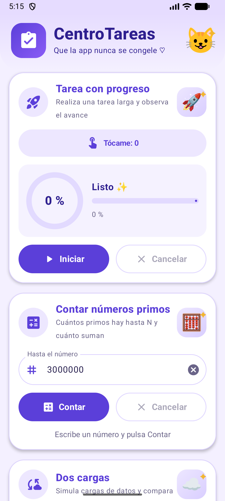
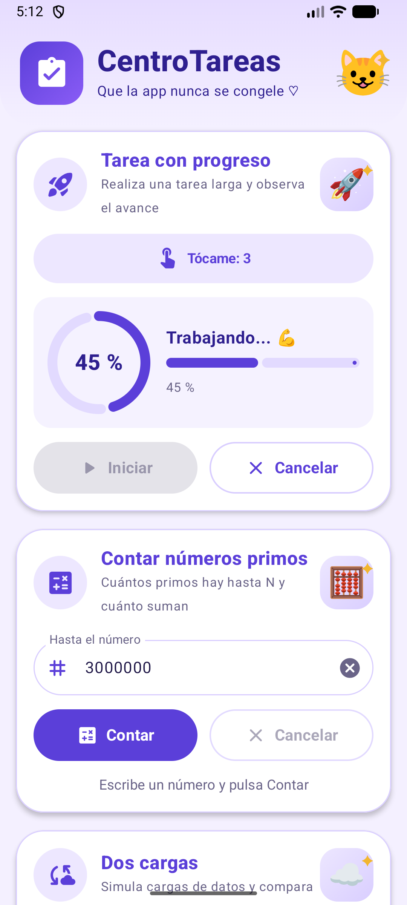
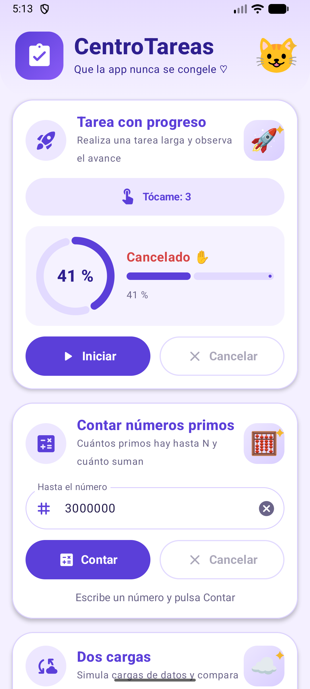
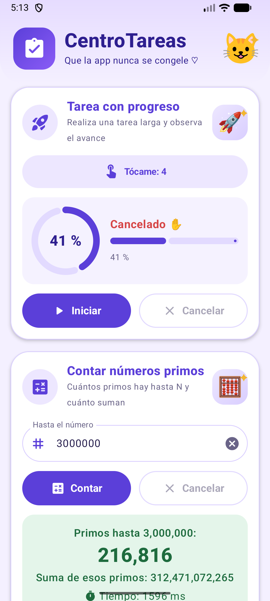
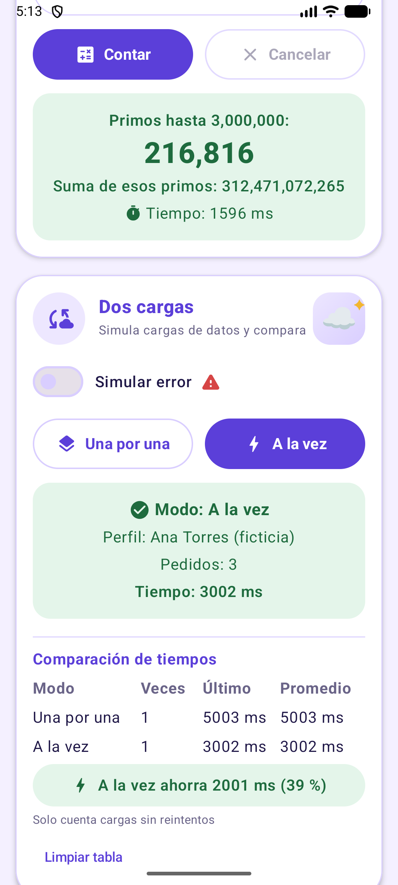
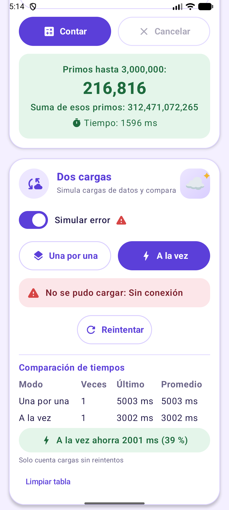

0Cómo leer este mapa
Cada ubicación se ve así: viewmodel/TareasViewModel.kt : 37 (archivo y número de línea).
Semana 14/app/src/main/java/com/tecsup/centrotareas/, salvo las de Gradle, que parten de Semana 14/.
Los números de línea son de la rama mejora-ia-s14 (la versión final). Cuando la versión de la rama main (Fase 1) es distinta, se indica aparte.
1Arquitectura MVVM + Repository
Cada capa conoce solo a la de abajo. Los datos suben por StateFlow y los eventos bajan como llamadas.
🖼️ View: Jetpack Compose
Solo muestra el estado y avisa los eventos (botones). No lanza corrutinas ni usa Thread.
vm.tareaLarga(), vm.contar(n)… ↑ estado: collectAsState()🧠 ViewModel: TareasViewModel
Lanza las corrutinas con viewModelScope y expone StateFlow de solo lectura. Conoce solo la interface del Repository.
suspend fun y Flow💾 Repository: interface + implementación local
Hace el trabajo pesado (cargas simuladas con delay, conteo de primos). No sabe nada de la UI.
Estados de pantalla
sealed interface PrimosUi y CargaUi; data class ResultadoPrimos (mejora 5) y ComparacionTiempos (mejora 4).
Inyección del Repository
MainActivity crea el ViewModel con su Factory y le pasa TareasRepositoryLocal().
2Dependencias
Todas en app/build.gradle.kts. No hace falta ningún permiso: las cargas son simuladas.
| Línea | Dependencia | Para qué sirve en el lab |
|---|---|---|
| 48 | lifecycle-viewmodel-compose:2.8.7 | La que pide la guía. Trae ViewModel, viewModelScope y viewModel() para Compose. Las corrutinas (launch, async, withContext) llegan con ella. |
| 47 | lifecycle-runtime-ktx:2.8.7 | Ciclo de vida de la Activity. |
| 49 | lifecycle-runtime-compose:2.8.7 | Utilidades de ciclo de vida para Compose. |
| 45 · 46 | core-ktx · activity-compose | Base de Android y setContent { } en MainActivity. |
| 51 | compose-bom:2024.12.01 | Fija versiones compatibles de todas las librerías de Compose. |
| 52 · 54 | compose.ui · material3 | Interfaz sin XML: Card, Button, LinearProgressIndicator, Switch… |
| 56 | material-icons-extended | Íconos redondeados: cohete, calculadora, nube, play, rayo, capas, reloj… |
| 34 | buildFeatures { compose = true } | Activa Compose en el módulo. |
3Hilos y corrutinas: cada concepto y dónde está
El hilo principal (main) dibuja y atiende toques. Todo lo que tarda va en segundo plano.
🚫 El problema: Thread.sleep
Paso 1: bloqueaba el hilo principal 4 s y la pantalla se congelaba. Ya no existe en el código final; queda en el historial.
commit e507862 · TareasViewModel.kt : 18–21🚀 viewModelScope.launch
Lanza corrutinas atadas al ViewModel: se cancelan solas si el ViewModel se destruye y sobreviven a la rotación.
TareasViewModel.kt : 40 : 76: 103: 124🔀 withContext(Dispatchers.Default)
Cambia de hilo para el trabajo pesado y vuelve a main al terminar.
🌊 Flow + flowOn (mejora 1)
La tarea emite su progreso con emit() desde Dispatchers.Default; el ViewModel hace collect en main.
🧵 Log.d("HILO")
Muestra en qué hilo corre cada parte: main → DefaultDispatcher-worker → main.
⏱️ delay (no bloquea)
Suspende solo la corrutina, libera el hilo y revisa la cancelación.
TareasRepositoryLocal.kt : 17 · 22 · 31 TareasViewModel.kt : 185🛑 Job y cancel()
Se guarda el resultado de launch para poder cancelarlo.
🧹 finally
corriendo = false se ejecuta siempre, tanto si la tarea termina bien como si la cancelan.
🔁 Evitar doble inicio
Si ya corre, no se lanza otra (y además el botón se deshabilita).
TareasViewModel.kt : 38 · 73 · 100 · 121✋ ensureActive()
Dentro del ciclo de primos: permite cancelar un cálculo de CPU a mitad de camino.
TareasRepositoryLocal.kt : 48⚡ async + coroutineScope + await
Perfil y pedidos al mismo tiempo: ≈ 3 s en lugar de 5 s. Si uno falla, se cancela el otro.
TareasViewModel.kt : 127–131🧯 try/catch + relanzar CancellationException
Un error de carga pasa a CargaUi.Error, pero la cancelación siempre se vuelve a lanzar.
📡 StateFlow de solo lectura
MutableStateFlow privado + asStateFlow() público. La UI los lee con collectAsState().
⏲️ Medir el tiempo
System.currentTimeMillis() antes y después de cada trabajo.
4Pasos de la guía (Fase 1, rama main)
Un commit por paso, con el mensaje exacto de la guía.
| Paso | Qué pide | Dónde está | Commit |
|---|---|---|---|
| 0 | Proyecto base que compila | MainActivity.ktmodel/Estados.ktdata/ | d655701 |
| 1 | tareaLargaMala() con Thread.sleep(4000); Observación en README | Historial: TareasViewModel.kt : 18 · README.md | e507862 |
| 2 | tareaLarga() con launch + withContext y Logcat HILO | main TareasViewModel.kt : 37–53 | e1a2f34 |
| 3 | progreso: StateFlow<Float>, 100 × 40 ms, barra y % | TareasViewModel.kt : 28ui/PantallaTareas.kt : 266 | a9a709a |
| 4 | Job, corriendo con finally, cancelar(), botones habilitados | TareasViewModel.kt : 32–60ui/PantallaTareas.kt : 280–286 | f4dfbcf |
| 5 | contarPrimos con Default + ensureActive; esPrimo; contar/cancelarPrimos | TareasRepositoryLocal.kt : 37–67TareasViewModel.kt : 72–92ui/PantallaTareas.kt : 307 | 4d1b4f9 |
| 6 | cargarUnaPorUna() ≈ 5 s y cargarALaVez() con async ≈ 3 s | TareasViewModel.kt : 99–142ui/PantallaTareas.kt : 393 | d90e322 |
| 7 | simularError, try/catch, Reintentar y Switch | TareasViewModel.kt : 145–150ui/PantallaTareas.kt : 407 · 446–466 | 2ad5b04 |
| 8 | Pruebas de aceptación, README, capturas y «Para pensar» | README.mdcapturas/ | 2f31016 |
5Mejoras de la Fase 2 (rama mejora-ia-s14)
Registro de prompts y decisiones en PROMPTS.md.
| Mejora | Qué hace | Dónde está | Commit |
|---|---|---|---|
| 1 · Progreso desde el Repository | flow { emit }.flowOn(Default); el ViewModel solo hace collect | TareasRepository.kt : 13TareasRepositoryLocal.kt : 28TareasViewModel.kt : 46 | fcb7760 |
| 2 · Primos con progreso | Callback alAvanzar cada 1 % y barra «Calculando… 41 %» | TareasRepository.kt : 8TareasViewModel.kt : 68ui/PantallaTareas.kt : 360 | db55379 |
| 3 · Reintento automático | Hasta 3 intentos con espera de 500 ms y luego 1000 ms; la cancelación nunca se reintenta | TareasViewModel.kt : 175–196 | 0490715 |
| 4 · Comparación de tiempos | Tabla con veces, último, promedio y ahorro de «A la vez» | TareasViewModel.kt : 153–167ui/PantallaTareas.kt : 471–477 | 10b7aa7 |
| 5 · Suma de primos | Además de contar los primos hasta N, los suma en la misma pasada (Long). Ej.: hasta 10 → 4 primos, suma 17 | TareasRepository.kt : 16TareasRepositoryLocal.kt : 41–58TareasViewModel.kt : 80–82ui/PantallaTareas.kt : 380 | bf42c74 |
| Diseño morado | Cabecera con ícono y gatito, tarjetas con ícono y dibujo, anillo + barra de progreso, botones con íconos y pie «¡Tú puedes!». Respeta la pantalla única y el orden de la guía | ui/PantallaTareas.ktui/theme/ | 1636e9a |
6Interfaz (Compose, sin XML)
Una sola pantalla, como en la sección 7 de la guía: título arriba y tres tarjetas en este orden, con el diseño morado. Todo está en ui/PantallaTareas.kt.
Cabecera, orden y pie
Ícono de la app, título CentroTareas y gatito; debajo las tres tarjetas con scroll; al final el pie «¡Tú puedes!».
ui/PantallaTareas.kt : 113 · 137 · 1831 · Tarea con progreso
Tócame (prueba de vida), anillo con el %, mensaje, LinearProgressIndicator con el % debajo, Iniciar / Cancelar (OutlinedButton).
ui/PantallaTareas.kt : 211 · 217 · 266 · 280–2862 · Contar números primos
Campo «Hasta el número» (no acepta textos inválidos ni números < 2), Contar / Cancelar y el recuadro verde con cantidad, suma y tiempo.
ui/PantallaTareas.kt : 307 · 315 · 324 · 3803 · Dos cargas
Switch «Simular error», Una por una (OutlinedButton) y A la vez, el recuadro verde o el de error con Reintentar debajo.
ui/PantallaTareas.kt : 393 · 407 · 446–466Tabla comparativa (mejora 4)
Dentro de la tarjeta Dos cargas, aparece después de la primera carga exitosa.
ui/PantallaTareas.kt : 471 · 477Piezas comunes y tema
Tarjeta con ícono y dibujo, botones con ícono, recuadro verde y paleta índigo/lavanda.
ui/PantallaTareas.kt : 522 · 583 · 604 · 627 ui/theme/Color.ktui/theme/Theme.kt : 97Reglas de oro
Verificadas con git grep y en el emulador.
Solo se usa viewModelScope.
Nada bloquea el hilo principal.
Se usa delay, que no bloquea.
En los 4 catch del ViewModel.
Solo llama funciones del ViewModel.
Ana Torres y los pedidos 101, 102 y 103.
8Capturas de la versión final
Tomadas en el emulador Medium_Phone, rama mejora-ia-s14.





